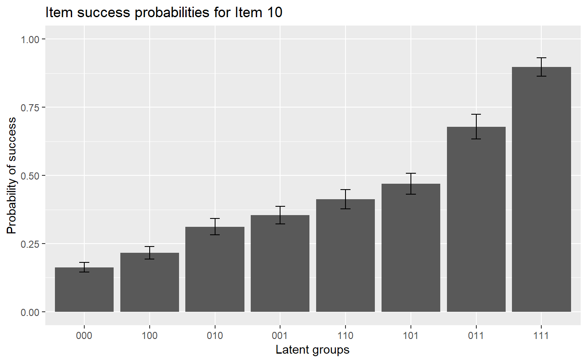
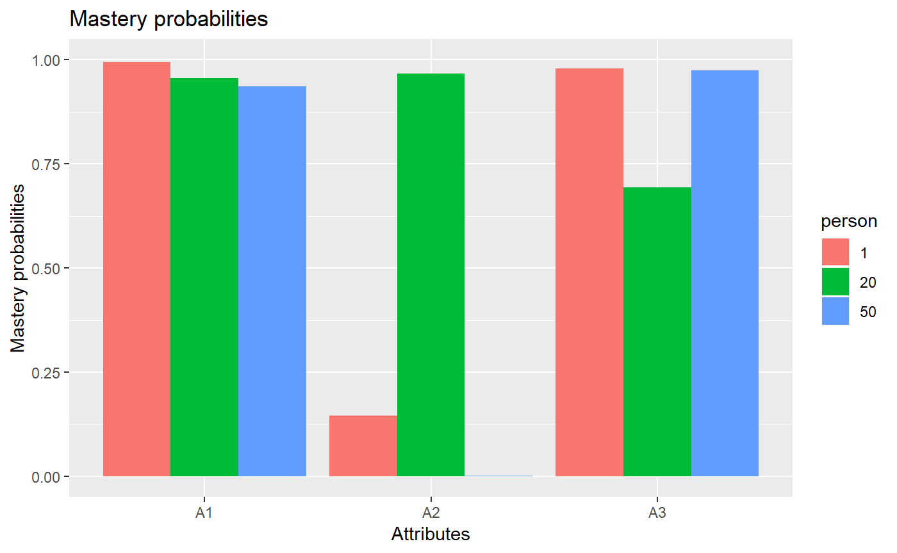

vignettes/OnlineExercises/RRUM_example.Rmd
RRUM_example.Rmdlibrary(GDINA)## ==============================================
## GDINA Package for Cognitive Diagnosis Modeling
## Version 2.1.15 (2018-6-6)
## ==============================================# A simulated data in GDINA package
dat <- sim10GDINA$simdat
Q <- sim10GDINA$simQ
# Fit RRUM model
est <- GDINA(dat = dat, Q = Q, model = "RRUM")##
Iter = 1 Max. abs. change = 0.38566 Deviance = 12821.161
Iter = 2 Max. abs. change = 0.04166 Deviance = 12048.048
Iter = 3 Max. abs. change = 0.02186 Deviance = 12012.469
Iter = 4 Max. abs. change = 0.01497 Deviance = 12001.704
Iter = 5 Max. abs. change = 0.01088 Deviance = 11996.846
Iter = 6 Max. abs. change = 0.00826 Deviance = 11994.019
Iter = 7 Max. abs. change = 0.00648 Deviance = 11992.120
Iter = 8 Max. abs. change = 0.00542 Deviance = 11990.749
Iter = 9 Max. abs. change = 0.00482 Deviance = 11989.722
Iter = 10 Max. abs. change = 0.00426 Deviance = 11988.936
Iter = 11 Max. abs. change = 0.00375 Deviance = 11988.327
Iter = 12 Max. abs. change = 0.00326 Deviance = 11987.849
Iter = 13 Max. abs. change = 0.00286 Deviance = 11987.471
Iter = 14 Max. abs. change = 0.00250 Deviance = 11987.170
Iter = 15 Max. abs. change = 0.00219 Deviance = 11986.929
Iter = 16 Max. abs. change = 0.00190 Deviance = 11986.735
Iter = 17 Max. abs. change = 0.00164 Deviance = 11986.578
Iter = 18 Max. abs. change = 0.00142 Deviance = 11986.450
Iter = 19 Max. abs. change = 0.00127 Deviance = 11986.347
Iter = 20 Max. abs. change = 0.00112 Deviance = 11986.262
Iter = 21 Max. abs. change = 0.00099 Deviance = 11986.194
Iter = 22 Max. abs. change = 0.00086 Deviance = 11986.138
Iter = 23 Max. abs. change = 0.00074 Deviance = 11986.092
Iter = 24 Max. abs. change = 0.00073 Deviance = 11986.054
Iter = 25 Max. abs. change = 0.00060 Deviance = 11986.024
Iter = 26 Max. abs. change = 0.00070 Deviance = 11985.999
Iter = 27 Max. abs. change = 0.00050 Deviance = 11985.979
Iter = 28 Max. abs. change = 0.00052 Deviance = 11985.962
Iter = 29 Max. abs. change = 0.00044 Deviance = 11985.949
Iter = 30 Max. abs. change = 0.00064 Deviance = 11985.937
Iter = 31 Max. abs. change = 0.00053 Deviance = 11985.928
Iter = 32 Max. abs. change = 0.00030 Deviance = 11985.920
Iter = 33 Max. abs. change = 0.00041 Deviance = 11985.914
Iter = 34 Max. abs. change = 0.00037 Deviance = 11985.909
Iter = 35 Max. abs. change = 0.00022 Deviance = 11985.904
Iter = 36 Max. abs. change = 0.00018 Deviance = 11985.901
Iter = 37 Max. abs. change = 0.00018 Deviance = 11985.898
Iter = 38 Max. abs. change = 0.00015 Deviance = 11985.896
Iter = 39 Max. abs. change = 0.00031 Deviance = 11985.894
Iter = 40 Max. abs. change = 0.00033 Deviance = 11985.893
Iter = 41 Max. abs. change = 0.00016 Deviance = 11985.891
Iter = 42 Max. abs. change = 0.00013 Deviance = 11985.890
Iter = 43 Max. abs. change = 0.00037 Deviance = 11985.889
Iter = 44 Max. abs. change = 0.00014 Deviance = 11985.888
Iter = 45 Max. abs. change = 0.00008 Deviance = 11985.888#####################################
#
# Summary Information
#
#####################################
# print estimation information
est## Call:
## GDINA(dat = dat, Q = Q, model = "RRUM")
##
## GDINA version 2.1.15 (2018-6-6)
## ===============================================
## Data
## -----------------------------------------------
## # of individuals groups items
## 1000 1 10
## ===============================================
## Model
## -----------------------------------------------
## Fitted model(s) = RRUM
## Attribute structure = saturated
## Attribute level = Dichotomous
## ===============================================
## Estimation
## -----------------------------------------------
## Number of iterations = 45
## For the final iteration:
## Max abs change in item success prob. = 0.0001
## Max abs change in mixing proportions = 0.0001
## Change in -2 log-likelihood = 0.0005
## Time used = 0.2699 secs# summary information
summary(est)##
## Test Fit Statistics
##
## Loglik = -5992.94
## AIC = 12055.89 | penalty = 70
## BIC = 12227.66 | penalty = 241.77
## # par = 35
##
## Attribute Prevalence
##
## Level0 Level1
## A1 0.4730 0.5270
## A2 0.4783 0.5217
## A3 0.4874 0.5126AIC(est) #AIC## [1] 12055.89BIC(est) #BIC## [1] 12227.66logLik(est) #log-likelihood value## 'log Lik.' -5992.944 (df=35)deviance(est) # deviance: -2 log-likelihood## [1] 11985.89npar(est) # number of parameters## No. of total parameters = 35
## No. of item parameters = 28
## No. of population parameters = 7nobs(est) # number of observations## [1] 1000# discrimination indices
extract(est, "discrim")## P(1)-P(0) GDI
## Item 1 0.6883213 0.11810022
## Item 2 0.6623545 0.10947108
## Item 3 0.8423048 0.17725591
## Item 4 0.7542905 0.08394568
## Item 5 0.7578322 0.08891113
## Item 6 0.4605824 0.02752823
## Item 7 0.6341268 0.05802273
## Item 8 0.7726035 0.08913683
## Item 9 0.6616308 0.05808101
## Item 10 0.7348266 0.05184494#####################################
#
# structural parameters
#
#####################################
coef(est) # item probabilities of success for each reduced latent class## $`Item 1`
## P(0) P(1)
## 0.1872 0.8755
##
## $`Item 2`
## P(0) P(1)
## 0.1155 0.7778
##
## $`Item 3`
## P(0) P(1)
## 0.0852 0.9275
##
## $`Item 4`
## P(00) P(10) P(01) P(11)
## 0.1391 0.2915 0.4262 0.8934
##
## $`Item 5`
## P(00) P(10) P(01) P(11)
## 0.0266 0.1532 0.1360 0.7844
##
## $`Item 6`
## P(00) P(10) P(01) P(11)
## 0.5059 0.6795 0.7195 0.9664
##
## $`Item 7`
## P(00) P(10) P(01) P(11)
## 0.1519 0.4053 0.2945 0.7860
##
## $`Item 8`
## P(00) P(10) P(01) P(11)
## 0.0806 0.2508 0.2742 0.8532
##
## $`Item 9`
## P(00) P(10) P(01) P(11)
## 0.1570 0.3356 0.3829 0.8186
##
## $`Item 10`
## P(000) P(100) P(010) P(001) P(110) P(101) P(011) P(111)
## 0.1631 0.2158 0.3119 0.3547 0.4128 0.4694 0.6785 0.8979coef(est, withSE = TRUE) # item probabilities of success & standard errors## $`Item 1`
## P(0) P(1)
## Est. 0.1872 0.8755
## S.E. 0.0295 0.0254
##
## $`Item 2`
## P(0) P(1)
## Est. 0.1155 0.7778
## S.E. 0.0240 0.0265
##
## $`Item 3`
## P(0) P(1)
## Est. 0.0852 0.9275
## S.E. 0.0225 0.0208
##
## $`Item 4`
## P(00) P(10) P(01) P(11)
## Est. 0.1391 0.2915 0.4262 0.8934
## S.E. 0.0168 0.0308 0.0379 0.0275
##
## $`Item 5`
## P(00) P(10) P(01) P(11)
## Est. 0.0266 0.1532 0.1360 0.7844
## S.E. 0.0062 0.0263 0.0296 0.0346
##
## $`Item 6`
## P(00) P(10) P(01) P(11)
## Est. 0.5059 0.6795 0.7195 0.9664
## S.E. 0.0254 0.0373 0.0384 0.0139
##
## $`Item 7`
## P(00) P(10) P(01) P(11)
## Est. 0.1519 0.4053 0.2945 0.7860
## S.E. 0.0189 0.0336 0.0329 0.0308
##
## $`Item 8`
## P(00) P(10) P(01) P(11)
## Est. 0.0806 0.2508 0.2742 0.8532
## S.E. 0.0133 0.0345 0.0365 0.0335
##
## $`Item 9`
## P(00) P(10) P(01) P(11)
## Est. 0.1570 0.3356 0.3829 0.8186
## S.E. 0.0172 0.0304 0.0332 0.0285
##
## $`Item 10`
## P(000) P(100) P(010) P(001) P(110) P(101) P(011) P(111)
## Est. 0.1631 0.2158 0.3119 0.3547 0.4128 0.4694 0.6785 0.8979
## S.E. 0.0172 0.0229 0.0295 0.0321 0.0353 0.0388 0.0455 0.0334coef(est, what = "delta") # delta parameters## $`Item 1`
## d0 d1
## -1.6758 1.5428
##
## $`Item 2`
## d0 d1
## -2.1586 1.9074
##
## $`Item 3`
## d0 d1
## -2.4624 2.3872
##
## $`Item 4`
## d0 d1 d2
## -1.9727 0.7402 1.1198
##
## $`Item 5`
## d0 d1 d2
## -3.6283 1.7522 1.6333
##
## $`Item 6`
## d0 d1 d2
## -0.6815 0.2950 0.3523
##
## $`Item 7`
## d0 d1 d2
## -1.8848 0.9818 0.6622
##
## $`Item 8`
## d0 d1 d2
## -2.5181 1.1351 1.2243
##
## $`Item 9`
## d0 d1 d2
## -1.8516 0.7598 0.8917
##
## $`Item 10`
## d0 d1 d2 d3
## -1.8136 0.2802 0.6485 0.7771coef(est, what = "delta", withSE = TRUE) # delta parameters## $`Item 1`
## d0 d1
## Est. -1.6758 1.5428
## S.E. 0.1574 0.1699
##
## $`Item 2`
## d0 d1
## Est. -2.1586 1.9074
## S.E. 0.2080 0.2201
##
## $`Item 3`
## d0 d1
## Est. -2.4624 2.3872
## S.E. 0.2635 0.2699
##
## $`Item 4`
## d0 d1 d2
## Est. -1.9727 0.7402 1.1198
## S.E. 0.1208 0.0965 0.1091
##
## $`Item 5`
## d0 d1 d2
## Est. -3.6283 1.7522 1.6333
## S.E. 0.2331 0.2254 0.1749
##
## $`Item 6`
## d0 d1 d2
## Est. -0.6815 0.2950 0.3523
## S.E. 0.0502 0.0555 0.0563
##
## $`Item 7`
## d0 d1 d2
## Est. -1.8848 0.9818 0.6622
## S.E. 0.1243 0.1205 0.0901
##
## $`Item 8`
## d0 d1 d2
## Est. -2.5181 1.1351 1.2243
## S.E. 0.1647 0.1418 0.1453
##
## $`Item 9`
## d0 d1 d2
## Est. -1.8516 0.7598 0.8917
## S.E. 0.1099 0.0943 0.0952
##
## $`Item 10`
## d0 d1 d2 d3
## Est. -1.8136 0.2802 0.6485 0.7771
## S.E. 0.1055 0.0743 0.0862 0.0863coef(est, what = "gs") # guessing and slip parameters## guessing slip
## Item 1 0.1872 0.1245
## Item 2 0.1155 0.2222
## Item 3 0.0852 0.0725
## Item 4 0.1391 0.1066
## Item 5 0.0266 0.2156
## Item 6 0.5059 0.0336
## Item 7 0.1519 0.2140
## Item 8 0.0806 0.1468
## Item 9 0.1570 0.1814
## Item 10 0.1631 0.1021coef(est, what = "gs", withSE = TRUE) # guessing and slip parameters & standard errors## guessing slip SE[guessing] SE[slip]
## Item 1 0.1872 0.1245 0.0295 0.0254
## Item 2 0.1155 0.2222 0.0240 0.0265
## Item 3 0.0852 0.0725 0.0225 0.0208
## Item 4 0.1391 0.1066 0.0168 0.0275
## Item 5 0.0266 0.2156 0.0062 0.0346
## Item 6 0.5059 0.0336 0.0254 0.0139
## Item 7 0.1519 0.2140 0.0189 0.0308
## Item 8 0.0806 0.1468 0.0133 0.0335
## Item 9 0.1570 0.1814 0.0172 0.0285
## Item 10 0.1631 0.1021 0.0172 0.0334# Estimated proportions of latent classes
coef(est,"lambda")## p(000) p(100) p(010) p(001) p(110) p(101) p(011) p(111)
## 0.1164 0.1052 0.1215 0.1110 0.1443 0.1458 0.1240 0.1318# success probabilities for each latent class
coef(est,"LCprob")## 000 100 010 001 110 101 011 111
## Item 1 0.1872 0.8755 0.1872 0.1872 0.8755 0.8755 0.1872 0.8755
## Item 2 0.1155 0.1155 0.7778 0.1155 0.7778 0.1155 0.7778 0.7778
## Item 3 0.0852 0.0852 0.0852 0.9275 0.0852 0.9275 0.9275 0.9275
## Item 4 0.1391 0.2915 0.1391 0.4262 0.2915 0.8934 0.4262 0.8934
## Item 5 0.0266 0.0266 0.1532 0.1360 0.1532 0.1360 0.7844 0.7844
## Item 6 0.5059 0.6795 0.7195 0.5059 0.9664 0.6795 0.7195 0.9664
## Item 7 0.1519 0.4053 0.1519 0.2945 0.4053 0.7860 0.2945 0.7860
## Item 8 0.0806 0.2508 0.2742 0.0806 0.8532 0.2508 0.2742 0.8532
## Item 9 0.1570 0.1570 0.3356 0.3829 0.3356 0.3829 0.8186 0.8186
## Item 10 0.1631 0.2158 0.3119 0.3547 0.4128 0.4694 0.6785 0.8979#####################################
#
# person parameters
#
#####################################
head(personparm(est)) # EAP estimates of attribute profiles## A1 A2 A3
## [1,] 1 0 1
## [2,] 1 1 1
## [3,] 0 1 1
## [4,] 1 1 1
## [5,] 0 0 1
## [6,] 1 0 0head(personparm(est, what = "MAP")) # MAP estimates of attribute profiles## A1 A2 A3 multimodes
## 1 1 0 1 FALSE
## 2 1 1 1 FALSE
## 3 0 1 1 FALSE
## 4 1 1 1 FALSE
## 5 0 0 1 FALSE
## 6 1 0 0 FALSEhead(personparm(est, what = "MLE")) # MLE estimates of attribute profiles## A1 A2 A3 multimodes
## 1 1 0 1 FALSE
## 2 1 1 1 FALSE
## 3 0 1 1 FALSE
## 4 1 1 1 FALSE
## 5 0 0 1 FALSE
## 6 1 0 0 FALSE#####################################
#
# Plots
#
#####################################
#plot item response functions for item 10
plot(est, item = 10)plot(est, item = 10, withSE = TRUE) # with error bars
#plot mastery probability for individuals 1, 20 and 50
plot(est, what = "mp", person = c(1, 20, 50))
#####################################
#
# Advanced elements
#
#####################################
head(indlogLik(est)) # individual log-likelihood## [,1] [,2] [,3] [,4] [,5] [,6]
## [1,] -13.329385 -8.354178 -12.863360 -8.814366 -7.888154 -3.839159
## [2,] -18.966730 -13.991523 -13.320167 -12.699109 -8.344960 -7.723902
## [3,] -14.754884 -12.399981 -10.415495 -9.846188 -9.547585 -9.109987
## [4,] -16.976031 -12.346153 -14.464959 -10.541900 -9.928526 -6.042694
## [5,] -7.814539 -8.671248 -10.572170 -4.336699 -14.606286 -5.324079
## [6,] -7.436434 -5.461029 -7.889029 -10.215919 -7.604038 -10.566399
## [,7] [,8]
## [1,] -10.583376 -5.608169
## [2,] -8.038824 -3.063617
## [3,] -6.007548 -7.616268
## [4,] -8.531579 -4.983743
## [5,] -9.830115 -14.852829
## [6,] -12.903549 -14.944443head(indlogPost(est)) # individual log-posterior## [,1] [,2] [,3] [,4] [,5] [,6]
## [1,] -9.885961 -5.011679 -9.376288 -5.4176945 -4.229443 -0.1703851
## [2,] -16.050188 -11.175906 -10.359976 -9.8293193 -5.213131 -4.5820099
## [3,] -9.097674 -6.843694 -4.714635 -4.2357296 -3.675087 -3.2274256
## [4,] -12.469224 -7.940271 -9.914504 -6.0818458 -5.206431 -1.3105365
## [5,] -3.863285 -4.820918 -6.577268 -0.4321977 -10.439745 -1.1474748
## [6,] -2.235349 -0.360869 -2.644296 -5.0615863 -2.187666 -5.1399640
## [,7] [,8]
## [1,] -7.0764074 -2.04005120
## [2,] -5.0587369 -0.02238071
## [3,] -0.2867923 -1.83436257
## [4,] -3.9612267 -0.35224142
## [5,] -5.8153162 -10.77688032
## [6,] -7.6389193 -9.61866309extract(est,"designmatrix") #design matrix## [[1]]
## [,1] [,2]
## [1,] 1 0
## [2,] 1 1
##
## [[2]]
## [,1] [,2]
## [1,] 1 0
## [2,] 1 1
##
## [[3]]
## [,1] [,2]
## [1,] 1 0
## [2,] 1 1
##
## [[4]]
## [,1] [,2] [,3]
## [1,] 1 0 0
## [2,] 1 1 0
## [3,] 1 0 1
## [4,] 1 1 1
##
## [[5]]
## [,1] [,2] [,3]
## [1,] 1 0 0
## [2,] 1 1 0
## [3,] 1 0 1
## [4,] 1 1 1
##
## [[6]]
## [,1] [,2] [,3]
## [1,] 1 0 0
## [2,] 1 1 0
## [3,] 1 0 1
## [4,] 1 1 1
##
## [[7]]
## [,1] [,2] [,3]
## [1,] 1 0 0
## [2,] 1 1 0
## [3,] 1 0 1
## [4,] 1 1 1
##
## [[8]]
## [,1] [,2] [,3]
## [1,] 1 0 0
## [2,] 1 1 0
## [3,] 1 0 1
## [4,] 1 1 1
##
## [[9]]
## [,1] [,2] [,3]
## [1,] 1 0 0
## [2,] 1 1 0
## [3,] 1 0 1
## [4,] 1 1 1
##
## [[10]]
## [,1] [,2] [,3] [,4]
## [1,] 1 0 0 0
## [2,] 1 1 0 0
## [3,] 1 0 1 0
## [4,] 1 0 0 1
## [5,] 1 1 1 0
## [6,] 1 1 0 1
## [7,] 1 0 1 1
## [8,] 1 1 1 1extract(est,"linkfunc") #link functions## [1] "log" "log" "log" "log" "log" "log" "log" "log" "log" "log"sessionInfo()## R version 3.5.1 (2018-07-02)
## Platform: i386-w64-mingw32/i386 (32-bit)
## Running under: Windows 10 x64 (build 17134)
##
## Matrix products: default
##
## locale:
## [1] LC_COLLATE=English_United States.1252
## [2] LC_CTYPE=English_United States.1252
## [3] LC_MONETARY=English_United States.1252
## [4] LC_NUMERIC=C
## [5] LC_TIME=English_United States.1252
##
## attached base packages:
## [1] stats graphics grDevices utils datasets methods base
##
## other attached packages:
## [1] GDINA_2.1.15
##
## loaded via a namespace (and not attached):
## [1] commonmark_1.5 digest_0.6.15 htmltools_0.3.6
## [4] R6_2.2.2 scales_1.0.0 Rsolnp_1.16
## [7] assertthat_0.2.0 rprojroot_1.3-2 grid_3.5.1
## [10] fs_1.2.5 stringr_1.3.1 knitr_1.20
## [13] numDeriv_2016.8-1 munsell_0.5.0 desc_1.2.0
## [16] shinydashboard_0.7.0 pillar_1.3.0 tibble_1.4.2
## [19] compiler_3.5.1 httpuv_1.4.5 mime_0.5
## [22] xml2_1.2.0 labeling_0.3 pkgdown_1.1.0
## [25] roxygen2_6.1.0 later_0.7.3 shiny_1.1.0
## [28] rstudioapi_0.7 ggplot2_3.0.0 MASS_7.3-50
## [31] plyr_1.8.4 stringi_1.2.4 magrittr_1.5
## [34] rmarkdown_1.10 evaluate_0.11 gtable_0.2.0
## [37] rlang_0.2.1 colorspace_1.3-2 promises_1.0.1
## [40] yaml_2.2.0 tools_3.5.1 alabama_2015.3-1
## [43] parallel_3.5.1 truncnorm_1.0-8 nloptr_1.0.4
## [46] xtable_1.8-2 lazyeval_0.2.1 crayon_1.3.4
## [49] backports_1.1.2 memoise_1.1.0 Rcpp_0.12.18